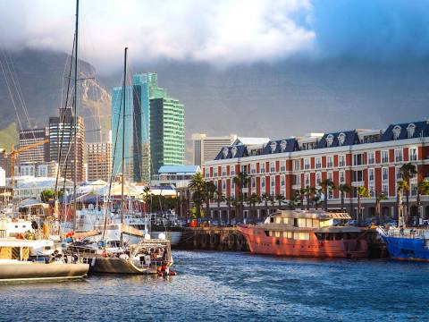

CAPE TOWN
Cape Town, the mothercity, this wonderful city is by far one of the most beautiful cities in the world simply by just being naturally beautiful, from its landscape, beaches, mountains and forests. Cape Town is such a lovable place by most tourists because it has gives off a feeling of peace and serenity by being in such a beautiful place, that is why most celebrities hide away in Cape Town when they come to South Africa for vacation unlike the busy streets of Johannesburg.
Places you can visit in Cape Town
Table Mountain
you could not visit Cape Town without seeing the mountains that lean over the beautiful city, everybody knows that Table Mountain is wonder of the world and with the beauty of these mountain's landscape, exploring these mountains is a really good pass-time
Lion's Head

Lion's Head is another beautiful mountain in Cape Town that lies between Table Mountain and Signal Hill, hiking up this mountain is a great activity for people that come for a vacation here and it is a great way to relieve yourself of stress
Kirstenbosch National Botanical Garden
this beautiful garden that lies at the eastern foot of Table Mountain is one of the most important places in South Africa and it keeps refuge one of the biomes in South Africa. It is an important place and visiting this place allows people to experience the many beautiful indigenious parts of South Africa that many that do not even know about.
V&A Waterfront
V&A Waterfront is a wonderful place that encompasses and emphasises the beauty of Cape Town, it is a wonderful place to go sightseeing, to go shopping or just to explore the coastline of the city, the Waterfront provides it all.